**Yang Qi & Yang Liu**
Rendering Algorithms FA 21, Final Project
# Introduction
## Motivational image
We would like to render a feather hidden inside an amber, lit by a dramatic beam of light from outside and casting caustics in the surroudings.
](ref-images/yonatan-mantzur-the-amber.png)
](ref-images/victor-hugo-harmatiuk-birdmuseum.png)
](ref-images/donggyu-lee-71.jpg)
](ref-images/beautiful-bright-amber-sand-against-600w-1397194472.png)
Apart from its beauty, amber is also of unique preservation value: it can capture ["unfossilizable parts of organisms"](https://en.wikipedia.org/wiki/Amber).
Thus, we think amber and fur are great demonstrations of our theme this year: "It's what's inside that counts".
## Division of Labor
Yang Qi
* Participating media
* Microfacet BSDF
* Hair/Fur shape and BSDF
* Window modeling, fur modeling and texturing
Yang Liu
* Directional light
* Surface Photon Mapping
* Volumetric Photon Mapping
* Scene rough modeling
## Scene Layout
Apart from the amber, the columns and the metallic ornament on the amber support, the rest of the objects are built by ourselves.
Their authors are mentioned in the "Acknowledgement" section.

# Participating media
We implemented homogeneous medium wih HenyeyGreenstein phase function for scattering.
## Absorption
We render an image by putting a sphere which contains absorption medium in front of the camera, which has a roughly expoential falloff with the distance from the center.
Also we tested the absorption for different channels, the image below has high blue and green absorption and no red absorption. We compared this with the previous result for blue and green channels, they are the same.
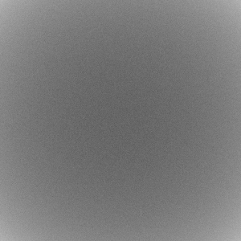
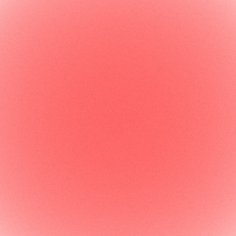
## Scattering
These image are rendering an isotropic medium in jensen box with different scattering coefficient.
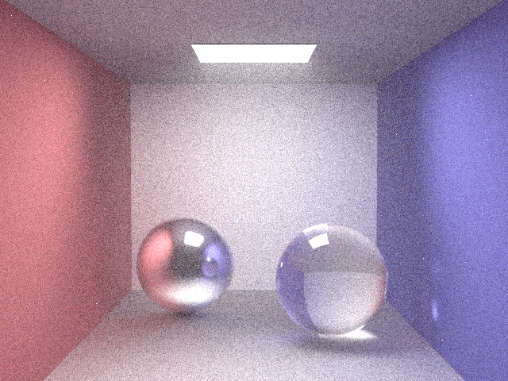
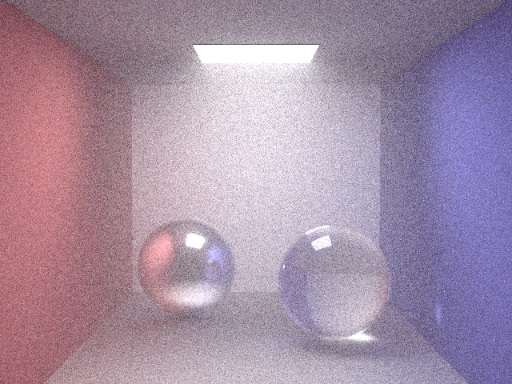
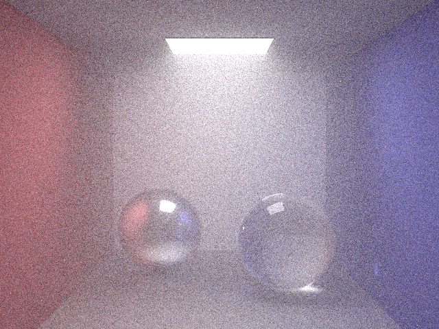
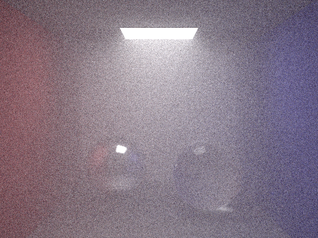
## Combination

# Microfacet BSDF
Like the Blinn-Phong BSDF, the microfacet BSDF assume surfaces are composition of small microsurfaces.
These microsurfaces statistically follow a distribution D, for our implementation we use GGX distribution for this.
Also, some microfacets will be invisible from certain angle because other microfacets are in front of them.
In the microfacet theory, there is also a Smith'smasking-shadoing function G to account for this.
](materials/pbrtmicrofacet.png)
For validation, we build a similar scene in blender and set the material's metallic to 1.
However blender seems to use a fix ior for all metal, which will not change according to the index of refraction.
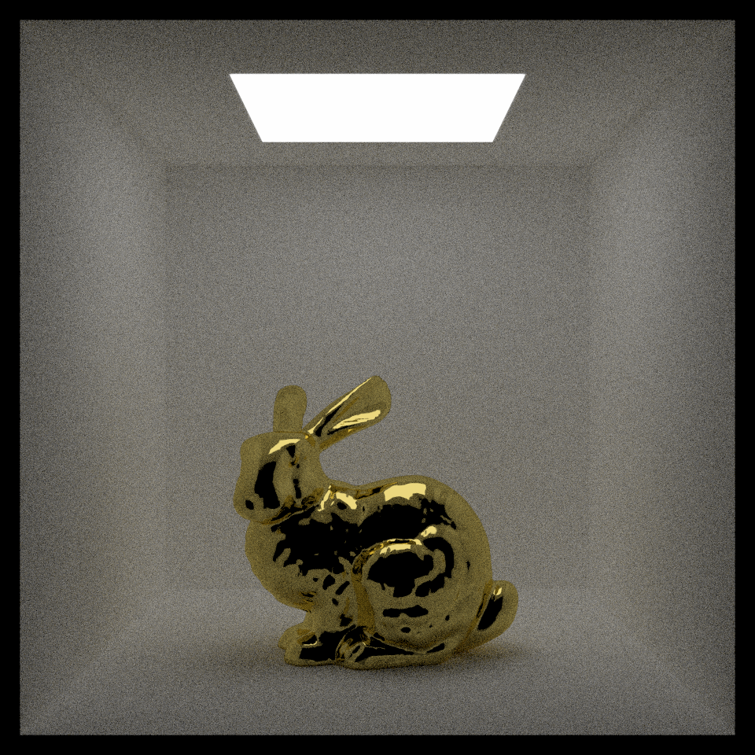
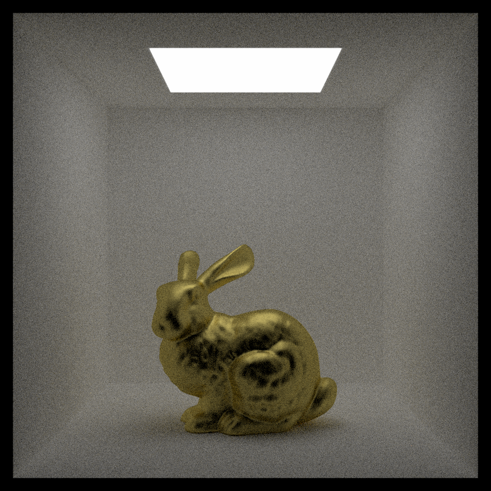
## Disney diffuse BSDF
For most object in our scene, we wanted to have a roughness parameter to control it's brightness, so we implemented the disney diffuse BSDF
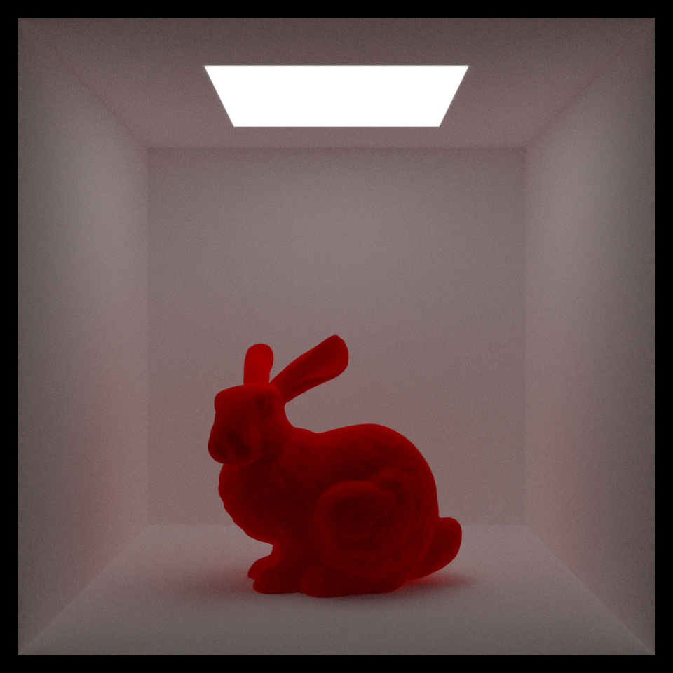
Finally our material was the frensel blend of diffuse, specular and metallic materials. Specular and metallic are handled by specular microfact BRDF and diffuse is handled by disney diffuse BRDF.
](materials/Blending.png)
# Feather
## Shape
We used particle system in blender to build a feather model, when exported to obj file, it contains 15,000 line segments.
We created a new mesh class to load the this obj file and perform intersection of it and ray. For the intersection, we chose to represent the line as a flat planes with some width.

## Hair/Fur BSDF
In order to render the apperance of the hair, we chose to implement the hair and fur scattering model in the paper [*A Practical and Controllable Hair and Fur Model for
Production Path Tracing, by Matt Jen-Yuan Chiang, Benedikt Bitterli, Chuck Tappan, and Brent Burley.*](https://benedikt-bitterli.me/pchfm/).
The basic idea of this hair model is that light can bounce multiple times inside the hair. The light that pass through the interior of the hair will be absorbed like the light pass through an absorption medium.
The longer the light travels inside the hair, the more "hair like" the color of the light is.
The total BSDF of the hair is the sum of all BSDF (Fp), which accounts for a certain number of bounces of the light (p) inside the hair.
](feather/hair_scattering.jpg)
Each Fp can be splited into three parts, the longitudinal scattering(Mp) and the azimuthal scattering(Np) and the length of this light ray travels (Ap).
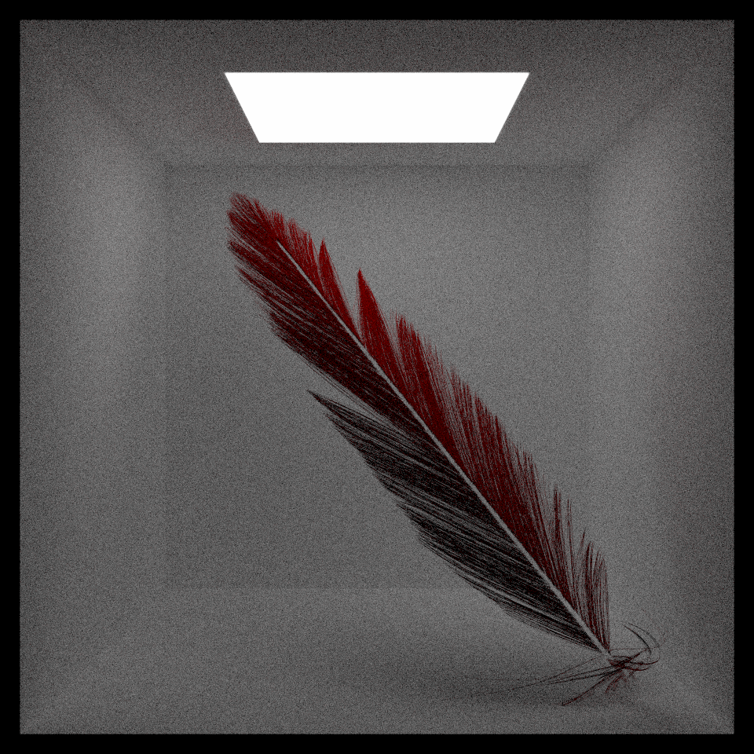
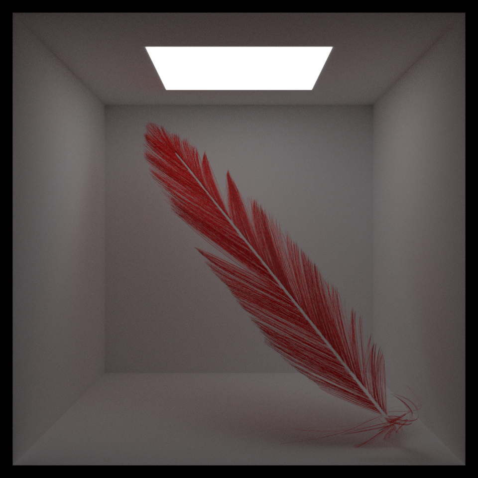
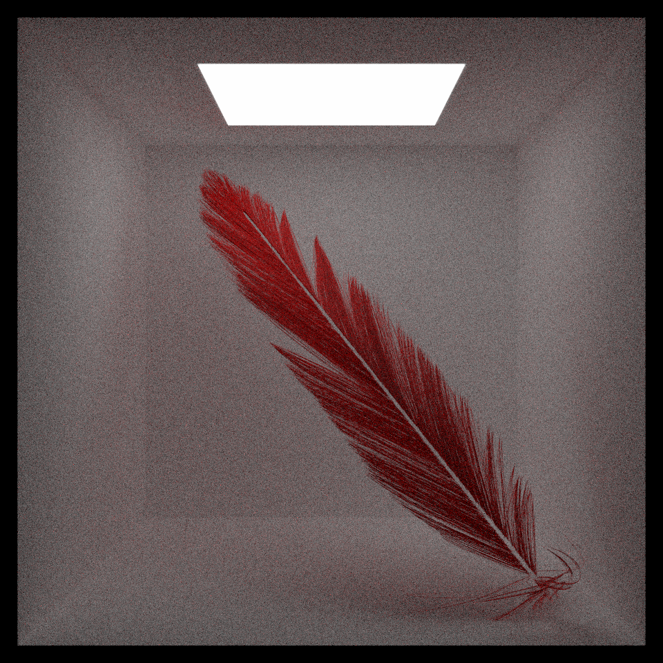
# Surface Photon Mapping
To render surface caustics, we first implemented a progressive surface photon mapper following the
[pbrt](https://pbr-book.org/3ed-2018/Light_Transport_III_Bidirectional_Methods/Stochastic_Progressive_Photon_Mapping)
book and Benedikt Bitterli's [Tungsten](https://github.com/tunabrain/tungsten)
renderer.
Here is a comparison between path tracer with MIS (PT), photon mapper (PM), and stochastic progressive photon mapper (SPPM).
The area light sources in scene rendered by the path tracer has been enlarged to speed up convergence and
emission changed to keep the same power.
Photon mapper provides much faster convergence rate on caustics, and SPPM can reduce the bias on caustics caused by blurring
progressively, producing much defined edges on caustics.
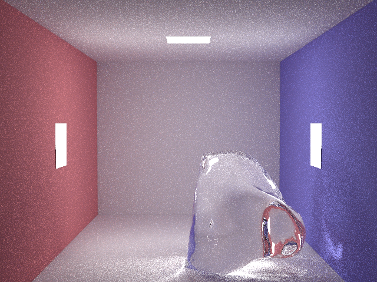
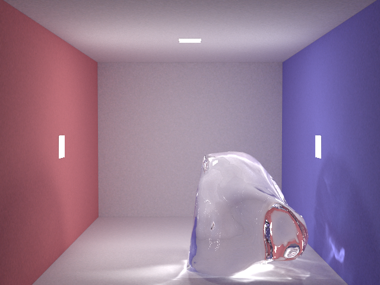
Following pbrt, our implementation can direct lighting from photon mapping and used light sampling for it instead.
For the progressive part, we chose to implement [Knaus & Zwicker's 2011 PPM paper](https://www.cs.umd.edu/~zwicker/publications/PPMProbabilistic-TOG11.pdf)
for its simplicity and easy extensibility to volumetric photon mapping.
## Implementation Details
We decided to implement a grid-based acceleration structure similar to the one used in pbrt due to its simplicity.
Given a gather radius r, we will create a grid with cells of roughly 2r width, and store the id of the photon in all cells it touches.
When retriving photons near a point p, we just need to check the cell containing p.
Tracing photons has been parallelized using a job system Yang Liu wrote when taking Computational Photography.
Rendering itself has already been parallelized before we start working on the final project.
The photons are also sorted by their grid ids. We found that sorting the
ids helped reduing rendering time a bit with a small penality in grid creation time.
Here is a comparison on rendering time on our final scene, use 1e7 surface photons and 1e6 volume photons and 10 camera rays per pixel:
| Without parallelized photon tracing | Parallelized photon tracing | Parallelized photon tracing + sorting |
---- | ----: | ----:| ----:|
Trace | 1m 20s | 13.447s | 13.235s |
Build | 1.935s | 1.706s | 2.804s |
Render | 59.353s | 55.064s | 49.065s |
[Rendered on a 6-core, 12-thread Intel i7-9750H CPU]
# Volumetric Photon Mapping
Based on the surface photon mapper we built, we also implemented a volumetric photon mapper using 3D point-point estimation.
We found that volumetric photon mapping will produce bright single-colored splotches if the medium is only highly scattering in a
single channel. We tried different ways to debug and fix this, such as replacing photon path termination strategy from local-based to
history-aware and handling the ray intersection on medium boundaries more robustly, but none of them seemed to help.
We decided to move on in the end because the amber in our final scene will not have a lot of scattering and we were running out of time.
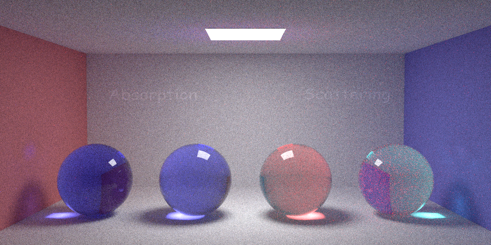
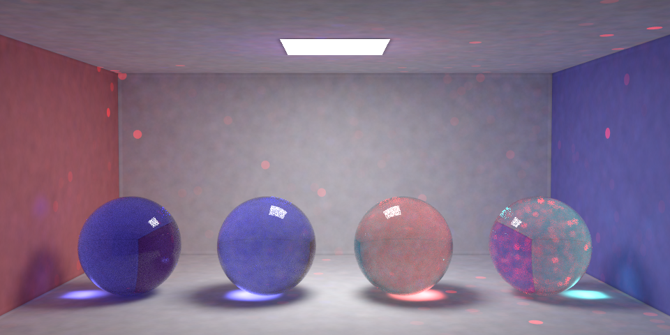
# Directional Light
To exaggerate the look of light beams and caustics we want to render in the final scene, we decided to implement a directional light source
since we have found that light beams and caustics are the most obvious when using small light sources. To simplify the generation of
photons from a directional light, our directional light can take a mesh as a "light portal" and use it to sample a start position of the photon.

We also implemented light sampling for the directional light but did not use it in the end, since it would produce perfectly hard shadows
on the ground. While biased, we liked the look of using photon mapping instead since it produces a softer shadow. If we had time, it's probably
better to write a special area light source that can only emit light within a certain angle for our use case.
# Final Image

For our final image, we decided to blend the result generated by our volumetric photon mapper using a directional light and the result generated by
our volumetric path tracer using an area light. The the area light fills the scene with
soft lighting, and the directional light creates the light beam and surface caustics, and. The blending is done using Photoshop.
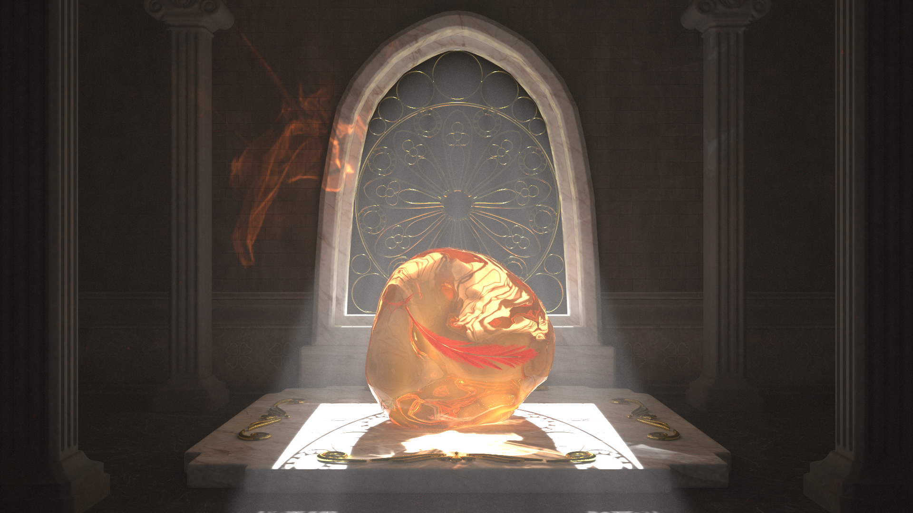
# Additional Challenges
## Non-symmetric BxDFs
For photon mapping, we need to be careful with handling non-symmetry BxDFs, such as the Phong BxDF.
Initially, we tried rendering a scene with Phong BxDF with photon mapping, and it looked entirely
different from the result generated by the path tracer.
Another example of non-symmetric BxDFs is the refraction BTDF we implemented for dielectrics.
This is obvious when rendering our sphere participating media scene above. If we don't apply a correction,
the result will look too bright compared to the path tracer.
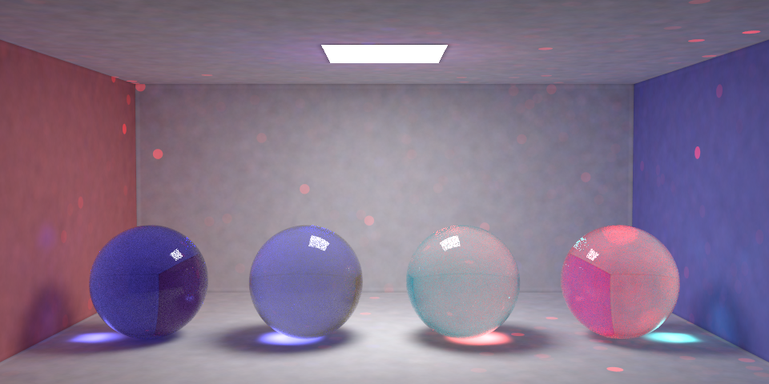
After multiplying the $\frac{\eta_i^2}{\eta_t^2}$ correction factor when a camera ray travels through
a dielectric surface, the result generated by two methods became much more similar.
Also, unfortunately, the hair BRDF model we mentioned above is not symmetry. Matt Pharr has mentioned several possible solutions to
non-reciprocity in his article [The Implementation of a Hair Scattering Model](https://pbrt.org/hair.pdf), but none of them seems elegant
and fits in our time constraint. In our final scene, where the feather using the hair BRDF is put inside an amber, we observed that
the feather will look too bright if the hair BRDF is used as is. We have experimented with these alternatives:
1. producing a mask of the feather and calculate its contribution using path tracing
2. flipping the $w_i$, $w_o$ in the BRDF when tracing photons
3. ignore the contribution of paths touching feather entirely during photon tracing
In the end, we chose option 3 because it can produce a darker look of the feather and we think it is more aesthetically pleasing.
# Acknowledgement
We would like to thank the authors of the models we used in our scene:
- The amber in our scene is modeled by [Loïc Norgeot](https://sketchfab.com/3d-models/mosquito-in-amber-53a61d58c09b4d2ab30e269aa3e22078) on sketchfab.
- The pillars in our scene is modeled by [3d.armzep](https://sketchfab.com/3d.armzep) on sketchfab.
- The ornament on the amber support is in the [Free 3d model ornament Pack](https://www.artstation.com/marketplace/p/bpDpb/free-3d-model-ornament-pack) by viam on artstation.
 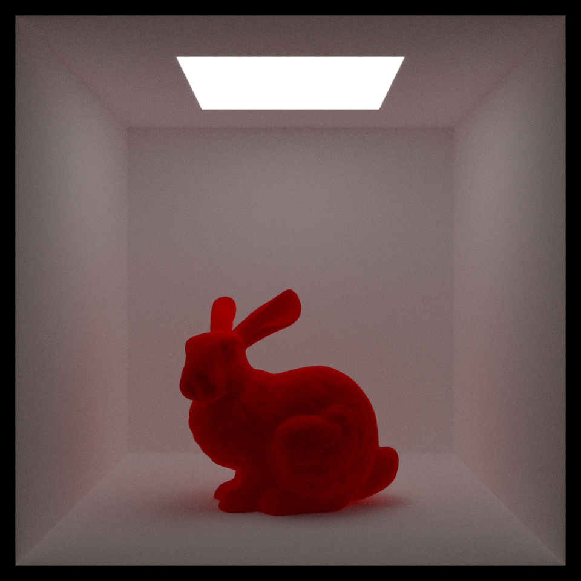
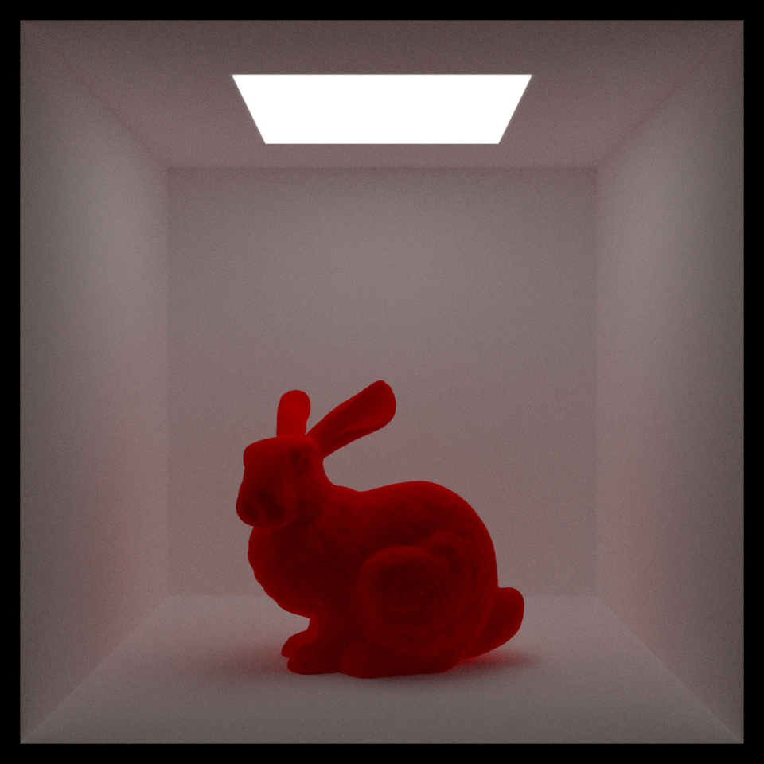
 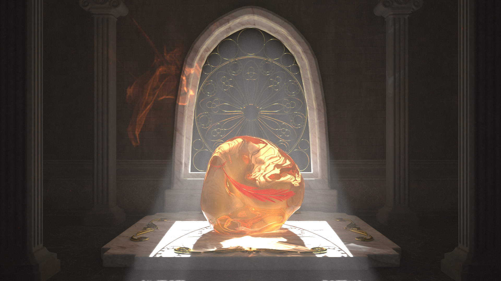
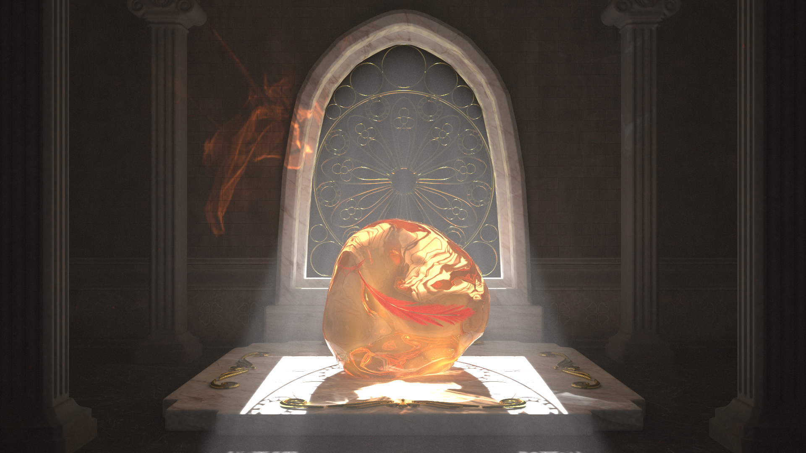